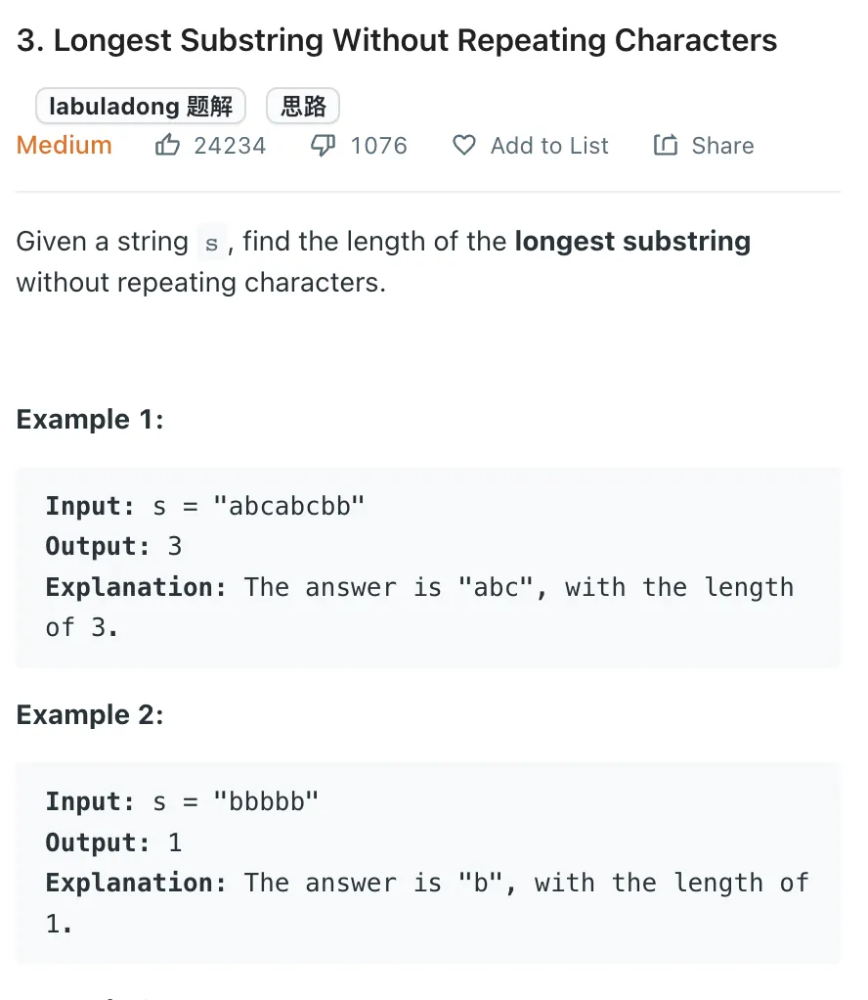
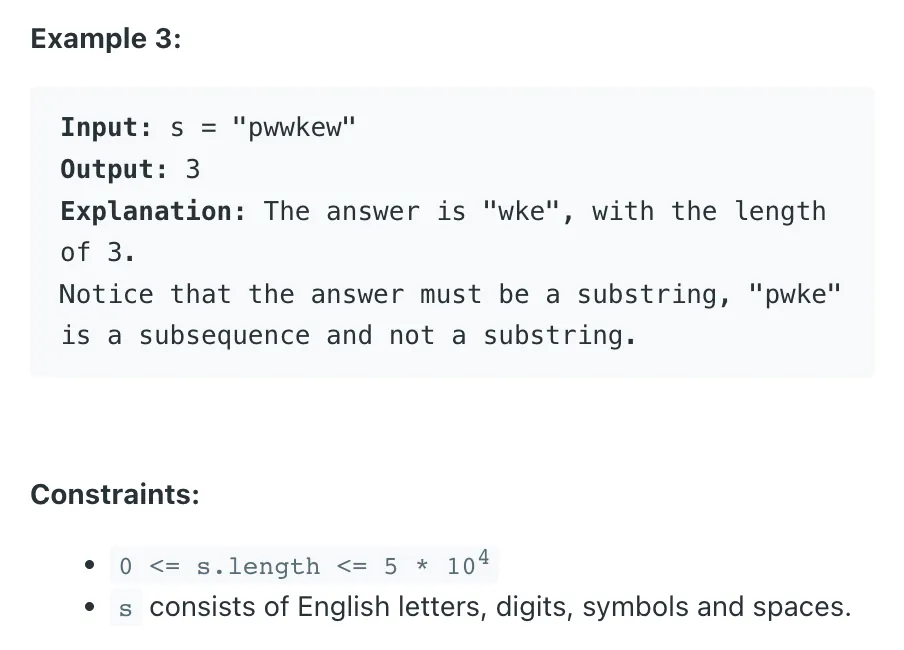

3. Longest Substring Without Repeating Characters
Question


先自己想想看 🤔Try it yourself first 🤔
✍🏽 My Solution
Runtime: 11 ms, faster than 57.37% of Java online submissions for Longest Substring Without Repeating Characters.
Memory Usage: 44.2 MB, less than 64.44% of Java online submissions for Longest Substring Without Repeating Characters.
class Solution {
public int lengthOfLongestSubstring(String s) {
HashMap<Character, Integer> window = new HashMap<>();
int left = 0, right = 0;
int res = 0;
while (right < s.length()) {
char c = s.charAt(right);
right++;
window.put(c, window.getOrDefault(c, 0) + 1);
while (window.get(c) > 1) {
char d = s.charAt(left);
left++;
window.put(d, window.get(d) - 1);
}
res = Math.max(res, right - left);
}
return res;
}
}
🧠 Thought Process
- What is the time/space complexity of my solution? How do I know?
- time: O(n)
- space: O(n)
Solution #1 [暴力解]
Time Limit Exceeded
class Solution {
public int lengthOfLongestSubstring(String s) {
int n = s.length();
if (n == 0) return 0;
int ans = 0;
for (int i = 0; i < n; i++) {
for (int j = i + 1; j <= n; j++) {
if (allUnique(s, i, j)) {
ans = Math.max(ans, j - i);
}
}
}
return ans;
}
private boolean allUnique(String s, int start, int end) {
Set<Character> set = new HashSet<>();
for (int i = start; i < end; i++) {
Character ch = s.charAt(i);
if (set.contains(ch)) return false;
set.add(ch);
}
return true;
}
}
Explanation (in my words)
- How does their solution work?
- 會超時
- What is the space/time complexity of their solution?
- time: O(n^3)
- space: O(min(m,n))
Solution #2 [王爭-滑動窗口]
Runtime: 11 ms, faster than 57.35% of Java online submissions for Longest Substring Without Repeating Characters. Memory Usage: 46.3 MB, less than 25.18% of Java online submissions for Longest Substring Without Repeating Characters.
class Solution {
public int lengthOfLongestSubstring(String s) {
int n = s.length();
if (n == 0) return 0;
int left = 0, right = 0;
Set<Character> set = new HashSet<>();
int maxLen = 0;
while (right < n) {
char c = s.charAt(right);
if (!set.contains(c)) {
set.add(c);
right++;
if (right - left > maxLen) {
maxLen = right - left;
}
continue;
}
while (set.contains(c)) {
set.remove(s.charAt(left));
left++;
}
}
return maxLen;
}
}
Solution #3 [滑動窗口-優化]
Runtime: 9 ms, faster than 66.95% of Java online submissions for Longest Substring Without Repeating Characters. Memory Usage: 45.1 MB, less than 41.41% of Java online submissions for Longest Substring Without Repeating Characters.
public class Solution {
public int lengthOfLongestSubstring(String s) {
int n = s.length();
int res = 0;
int left = 0, right = 0;
Map<Character, Integer> map = new HashMap<>();
while (right < n) {
char c = s.charAt(right);
if (map.containsKey(c)) {
left = Math.max(map.get(c), left);
}
res = Math.max(res, right - left + 1);
map.put(c, right + 1);//下标 + 1 代表 i 要移动的下个位置
right++;
}
return res;
}
}
Explanation (in my words)
- How does their solution work?
- 实现这样的话，我们将 set 改为 map ，将字符存为 key ，将对应的下标存到 value 里就实现了。
- 由于采取了 i 跳跃的形式，所以 map 之前存的字符没有进行 remove ，所以 if 语句中进行了Math.max ( map.get ( s.charAt ( j ) ) , i )，要确认得到的下标不是 i 前边的。
- What is the space/time complexity of their solution?
- time: O(n)
- space: O(min(m,n))
Solution #4 [建立數組大小的空間]
Runtime: 4 ms, faster than 96.46% of Java online submissions for Longest Substring Without Repeating Characters. Memory Usage: 44.6 MB, less than 63.98% of Java online submissions for Longest Substring Without Repeating Characters.
class Solution {
public int lengthOfLongestSubstring(String s) {
int n = s.length();
if (n == 0) return 0;
int[] chars = new int[127];
Arrays.fill(chars, -1);
int max = 0;
int j = 0;
for (int i = 0; i < n; i++) {
char c = s.charAt(i);
if (chars[c] > -1) {
j = Math.max(j, chars[c] + 1);
}
chars[c] = i;
max = Math.max(max, i - j + 1);
}
return max;
}
}
Explanation (in my words)
- What is the space/time complexity of their solution?
- time:O(n)
- space: O(n)